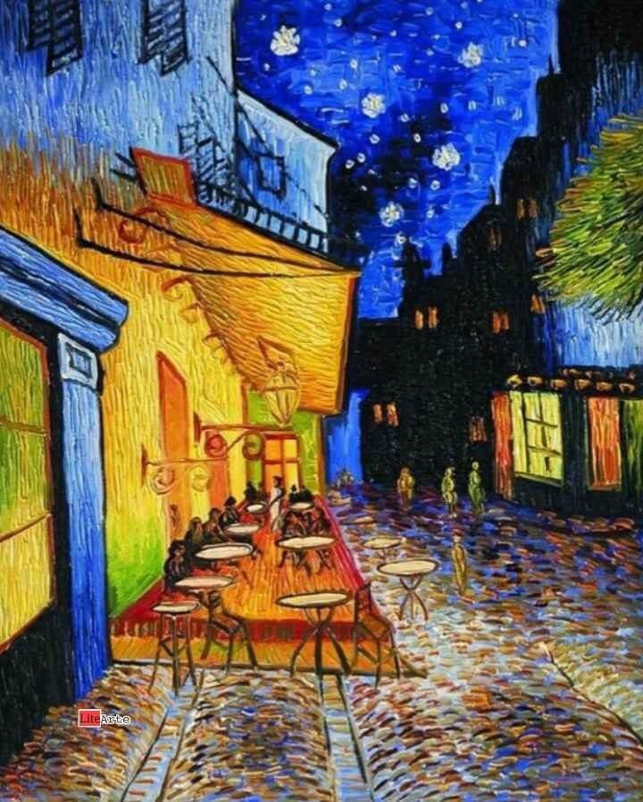

Esta pintura fue creada por Vincent van Gogh en 1888 en Arles, Francia.
Es una de las primeras pinturas nocturnas al aire libre de la historia del arte.
Van Gogh uso colores amarillos y azules para mostrar la luz del cafe y la noche.
La pintura se encuentra en el Museo Kroller-Muller en Holanda.
Año: 1888
Lugar: Arles, Francia
Tecnica: Oleo sobre lienzo
Tamaño: 81 x 65.5 cm
Mar Carolina Estrada Jimenez